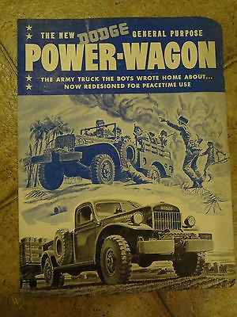
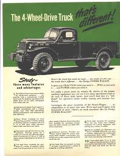
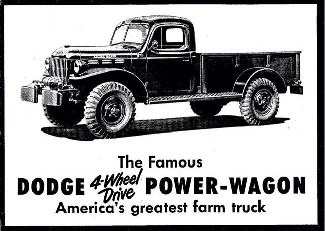
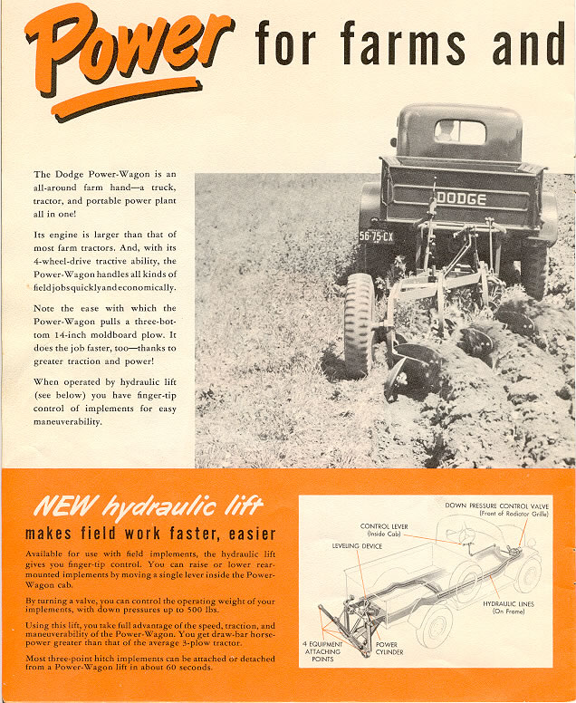
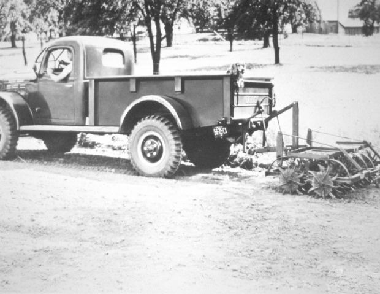
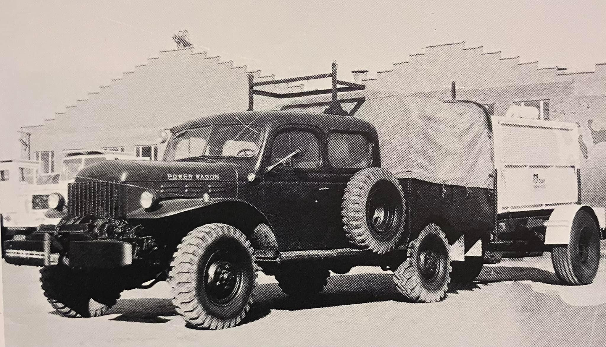
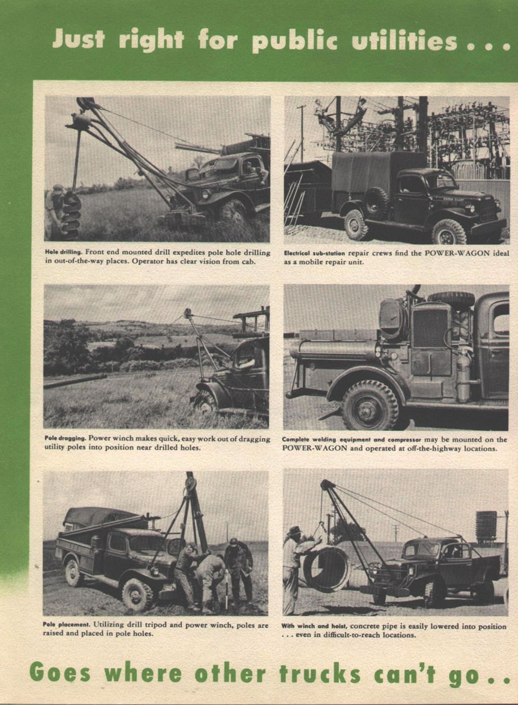
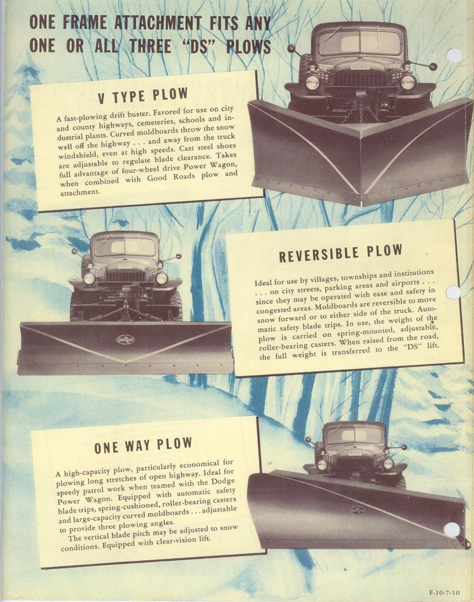

Born in War
When the United States entered the Second World War, Dodge did what nearly every American manufacturer did. It stopped building for civilians and turned its lines over to the war effort. The result was the WC series, a family of light military trucks that would go on to define what a go-anywhere vehicle could be.
The WCs came in many forms. There were half-ton and three-quarter-ton models, open cabs with collapsible windshields and canvas tops, and closed steel cabs. There were cargo trucks, radio trucks, command cars, and the WC-54 ambulance with its big metal body and red cross. Dodge built well over a quarter million of them. They served in North Africa, across Europe, and throughout the Pacific.
What set the WC apart was not speed or comfort. It was grunt and dependability. The three-quarter-ton weapons carrier in particular earned a reputation as the truck that simply would not quit. It went where it was pointed, hauled what was loaded, and got its crew home. Soldiers trusted it in a way they trusted few pieces of equipment. Many of those soldiers were farm boys, and they did not forget.

The Boys Wrote Home
When the war ended and the servicemen came home, a lot of them went back to the land. They returned to farms and ranches that ran on tractors and worn-out prewar trucks, and they remembered the machine that had carried them through the worst conditions imaginable. They wanted that truck. Some bought up military surplus units the moment they hit the market. Others wrote directly to Dodge asking where a civilian could buy something like the truck they had used overseas.

Dodge listened. The company was already swamped with demand for the durability, four-wheel drive, and high capacity the wartime trucks had proven. Rather than design a civilian truck from scratch, Dodge engineers did what they called parts-room engineering. They took the proven three-quarter-ton chassis, drivetrain, and transfer case and adapted what already existed. Nearly every component evolved from something that had already survived the war.
The First 4×4 You Could Buy
The truck that emerged went on sale in early 1946 as the WDX, and the world came to know it as the Power Wagon. It paired the military running gear with a closed civilian cab borrowed from Dodge's commercial truck line, a cab whose basic design dated back to 1939. That gave a farmer something the open military WC never offered, which was a weatherproof place to sit while doing a full day of brutal work.
Under the hood sat the 230 cubic inch flathead inline-six, a long-stroke motor that made its torque down low where it mattered. It produced modest horsepower but enormous pulling power, with peak torque arriving at around 1,600 rpm. Behind it ran a four-speed manual and a two-speed transfer case with a granny-low first gear. Dodge bumped the rating up from the military three-quarter-ton to a full one ton and bolted on an eight-foot bed.



The Power Wagon is often called the first factory four-wheel-drive truck, and in a specific sense it was. There had been four-wheel-drive trucks before it, but they were either purely military or aftermarket conversions, like the Fords that Marmon-Herrington had been converting since the 1930s. What the Power Wagon did first was put four-wheel drive into a complete, mass-produced truck that an ordinary civilian could walk into a dealership and buy off the lot from a major manufacturer.
A Power Plant on Wheels
The genius of the Power Wagon was not really the four-wheel drive. It was the power take-off. Dodge marketed the truck less as a vehicle and more as a self-propelled power plant, and that framing is exactly why it sold.


A buyer could spec power take-off at the front, the center, and the rear, along with a governor that held the engine at a steady speed under load. That turned the truck into a mobile engine that could drive almost anything. It ran winches, well-drilling rigs, buzz saws, generators, water pumps, feed grinders, and hammer mills. For a farmer or rancher working miles from the barn with no electricity in sight, the truck was the stationary engine. You drove your power source out to the work instead of dragging the work back to the power.


It was not one tool. It was the thing that ran all the other tools, anywhere you could drive it.
The First Crew Cabs
The Power Wagon's reputation as a platform led to another idea that the rest of the industry would not catch up to for years. Companies whose work took whole crews far from any road needed a way to carry the men along with the tools.

Utility, timber, and railroad companies were the natural customers. Railroad work especially often happened miles down the tracks with no road leading to the spot, and a repair gang of four to six men had to get there together. The standard single-row cab could not do it. So these companies went to coachbuilders, the same kind of custom body shops that built limousines and hearses, and had them graft second rows of seating and extra doors onto rugged work trucks. There are crew-cab Power Wagons from the 1940s built for railroads out west, years before anything the factories offered.


The manufacturers eventually noticed. International Harvester offered the first factory crew cab in 1957, and Dodge followed in 1963. But those early crew cabs stayed work tools that sold poorly to ordinary buyers. The shift to selling extra cab room to retail customers came from Dodge, which introduced the Club Cab in 1973, the first extended cab pickup from any American manufacturer. Dodge did not invent the multi-row truck, but it brought the idea to everyday buyers, and today the crew cab is the most common pickup body style on the road.
The Truck That Refused to Die
American sales ran from 1946 right through 1968, the flat-fender barely changing in spirit the whole time. What finally killed it at home was not a better truck. It was emissions regulation the old flathead six could not meet. But that was only the end of the American chapter.

The vehicles were so simple, so rugged, and so repairable that armies and operators kept them running for decades. The Philippine Commonwealth Army held onto its three-quarter-ton WCs into the 1980s. The Free French Forces ran theirs through the 1950s and 60s in Indochina, Suez, and Algeria. Surplus units scattered across Greece, Norway, Portugal, Israel, Iran, and beyond. To this day you can meet someone who grew up in rural France and saw a wartime Dodge in person, because so many were left behind and put to work.
They were also rebuilt and repurposed, nowhere more than in the Philippines, where abandoned American military vehicles were given second, third, and fourth lives. The jeepney, still running today, began as surplus Willys jeeps lengthened and bodied into an entire indigenous transport industry. Dodge weapons carriers got the same treatment.
Made Abroad for Decades
The Power Wagon was manufactured well beyond American shores, and its overseas production outlasted Detroit's by a wide margin. Dodge kept exporting the flat-fender until around 1977 and 1978. Beyond export, several countries built it under license. Premier Automobiles in India built Dodge and Fargo trucks in collaboration with Chrysler. Barreiros built Dodge trucks in Spain. Mowag in Switzerland built fire engines on the Power Wagon chassis from 1955. Argentina assembled them into the early 1970s.
The clearest example of the truck refusing to stop is Israel, where the Power Wagon and its relatives were produced locally and the homegrown version nicknamed the Nun-Nun was built in Nazareth into the 1980s before being developed into a more modern vehicle called the Abir. That puts Israeli production nearly two decades past the end of US civilian sales.
1946's Idea, Reborn
When the Ram name took over Dodge's pickups for 1981, Power Wagon disappeared as a model and lay dormant for more than two decades. Then in 2005 the name returned as a serious off-road version of the heavy-duty Ram 2500, and the badge meant something specific again.
What carried over was the philosophy. The modern Power Wagon comes off the line with the hardware an off-roader would otherwise bolt on themselves: a two-inch factory lift over a normal 2500, front and rear locking differentials, an electronically disconnecting front sway bar, a factory 12,000-pound winch, low 4.10 gearing, and underbody skid plates, all behind a 410-horsepower 6.4-liter Hemi V8. The trade-off is deliberate. It is gas-only and carries lower payload and tow ratings than a standard 2500, because capability comes first. That is the same bargain the 1946 truck offered.
In 2021 the truck reached a milestone almost no nameplate survives to see, seventy-five years since the original, marked by the Power Wagon 75th Anniversary Edition and unveiled around Veterans Day in a nod to its wartime roots. Same mechanicals, with commemorative badging, beadlock-capable wheels on 33-inch tires, and a Mountain Brown leather interior. By then the original flat-fenders had become genuine collectibles, with show-quality restorations running well into six figures, the very trucks GIs once bought cheap off the surplus lot.
From rural France to Luzon to Nazareth, the Power Wagon became a physical artifact of America's wartime footprint, and it held its place by simply continuing to work.